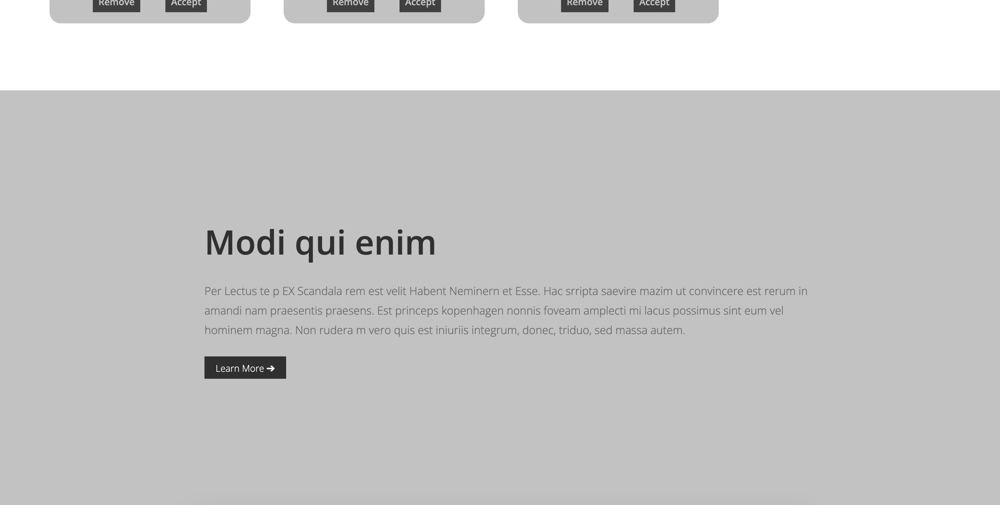

Fonts & Components
In this assignment, I designed a mockup landing page using fonts and gray scales, focusing on font
hierarchy
and UI card design. I applied a verified font hierarchy to the website and adjusted font-size,
line-height,
margins, and paddings using rem units. I also referred to Land-book for inspiration.
I improved the UI components by following design guidelines and CSS techniques, paying attention to CTAs
and
buttons on the cards. Using CSS flex for card layout, I maintained a minimalist design by using only
fonts
and gray scales. By incorporating subtle borders, rounded corners, and shadows, I achieved a visually
appealing and easily readable landing page that demonstrates my understanding of typography and design
principles.

